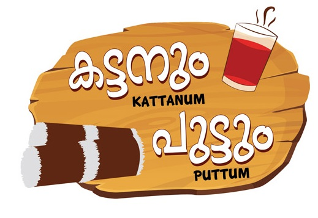

2016START OF A NEW TASTE
when 3 friends after a trip decided to start a small resturant the only demand they had was it should have a special taste.That special taste which they decided to serve changed P U K A into alleppy's favourite resturant.When the sister of one of the three friends shared the idea of the resturant in facebook they got more support and the taste of PUKA is now famous all over kerala.Recently a new branch had been opened in banglore taking the taste of pka out of kerala...Read More